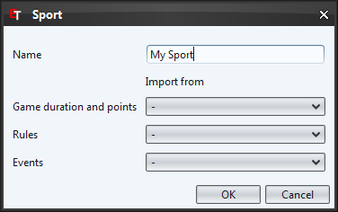
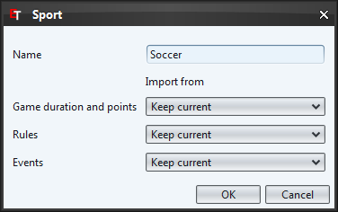

|  |  |
| New sport | Edit sport |
This dialog helps you to create new or edit existing sports.
In this field you should write the name of your sport. It is not editable if you are editing a default sport.
The drop-down lists provide you the possibility to import rules etc. of existing sports. If you select "-" the corresponding category will be empty (e.g. no rules in the rule screen). This could be an advantage if you would like to define the rules completely by yourself. How to do this you can read in the following chapters.
If you are editing an existing sport you have the additional option "Keep current". This means that the corresponding category will not change.